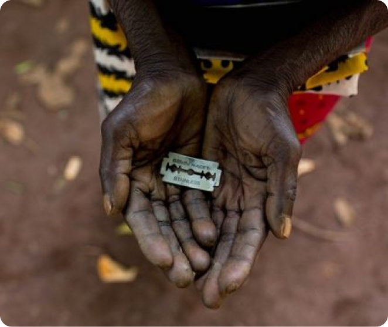

+
L'excision
Ayez de nouvelles connaissances sur le féminisme, découvrez ou non qu’est ce que l’excision, où est-elle pratiquée, les conséquences de cet acte, et comment elle évolue...
Sur ce site web, vous allez pouvoir découvrir un sujet du féminisme moins connu et mis de côté → l’excision
Vous trouverez également quelques femmes aillant militer d’une certaines façon pour le féminisme.
Si vous êtes victime ou témoin de violence, appelez le 3919 & 119.
Ayez de nouvelles connaissances sur le féminisme, découvrez ou non qu’est ce que l’excision, où est-elle pratiquée, les conséquences de cet acte, et comment elle évolue...
Découvrez qui est Waris, cette femme féministe qui combat contre l’excision. Elle même l’a subit, et à décidé de changer les choses...
Découvrez l’autobiographie de Waris Dirie. Dans lequel elle nous raconte son histoire qui débute en Somalie. Viol, excision, fuite, ça vie fut mouvementée...